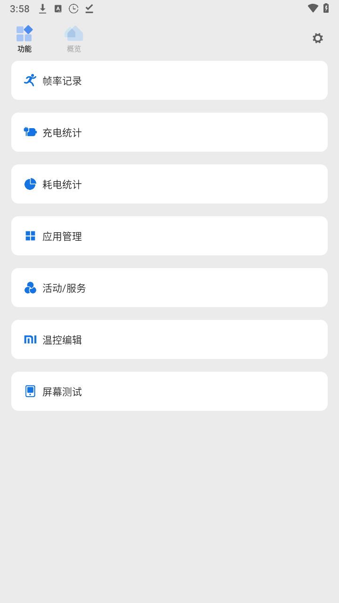

从骁龙工具箱到 Scene：一个玩机工具的五年迭代史
从小米社区流传的骁龙工具箱，到今天覆盖全芯片平台的 Scene——看看这款工具如何一步步把 ROOT 专属的玩机能力推向大众。
现在这版 Scene，和五年前完全不是一回事
我手上这台手机装着最新版的 Scene，打开就能看到实时帧率、逐核频率、耗电排行——不需要 ROOT，不需要插电脑，装完就用。三年前我第一次接触这类工具时，这是想都不敢想的事。
那时候要调个温控，得先解锁 Bootloader、刷 Magisk、授予 su 权限，中间任何一步卡住都可能变砖。现在Scene官网把这个门槛拆成了三层：基础模式什么都不用做，ADB 模式花十分钟配好无线调试就能覆盖 90% 的调校需求，真要改系统文件才需要进 ROOT。这个分层设计本身，就是一场历时数年的产品进化。

起步：只有骁龙，且必须 ROOT
Scene 的前身是骁龙工具箱（圈内常叫 vtools），最早在小米社区玩机圈流传。那个版本的逻辑很简单：你有一台骁龙芯片的小米手机，你已经 ROOT 了，那这款工具能让你看到更多硬件信息、调一些系统参数。没有安装包分发渠道，没有官方文档，靠玩机圈口口相传。
早期版本的局限也是硬的：只认高通骁龙，联发科、天玑、麒麟都不支持；只支持 ROOT 权限，ADB 连想都不用想——那时候安卓的无线调试还没进 AOSP，ADB 得插数据线，权限也不够改温控。能用的人不多，但这批人成了最核心的种子用户，他们贡献的 bug 反馈和功能建议，塑造了后续几个大版本的方向。
第一次大转向：从骁龙到通用
Scene 这个名字对应的是 2023 年前后的一次底层重构，安装包从官方下载获取。重构的核心决定有两个：跨芯片平台通用化，和引入 ADB 模式。
通用化意味着不再只针对骁龙做深度适配，而是把能在任何安卓设备上读到的硬件信息先统一实现。这一步踩得不轻——联发科的温控节点路径和骁龙完全不一样，天玑系列的 GPU 驱动也有自己的一套调度器，重构过程中光适配不同芯片的节点命名就花了好几个版本。但团队的耐心有回报：到今天 Scene 能在骁龙、天玑、麒麟、Exynos 上都正常跑，基础的帧率监控和温控调校不再是高通专属。
ADB 模式的引入则是门槛革命。安卓 11 引入无线调试后，Scene 团队迅速跟进：不再要求用户 ROOT，只要在开发者选项里打开无线调试、配对一次，就能拿到足够的权限写入温控策略、冻结应用、修改场景化档位。这一下把用户池从"已 ROOT 的玩机老手"扩大到了"愿意花十分钟配置的普通用户"。我身边好几个从不碰刷机的朋友，就是从 Scene 的 ADB 模式开始接触玩机调优的。

分层定型：基础、ADB、ROOT 三层能力矩阵
重构之后的几个版本，团队没再搞大的架构变动，而是把三层模式各自补全。
基础模式是给完全不想折腾的人准备的：装好就能看帧率、频率、电池、耗电排行——这些信息以前要么藏在工程模式里，要么需要电脑端工具采。基础模式不能调，但能"看见"，这本身就是价值。很多人装 Scene 就是为了打游戏时看一眼帧率曲线，调画质时有个客观参照。
ADB 模式持续在扩容。温控策略从最初的两段式扩展到五段式温度响应曲线，场景化档位从只有"游戏/日常"两档扩展到可以按应用自定义触发条件。黑阈脚本路线和 Shizuku 路线的支持也是在这一阶段加的——用户偏好不同，团队就把每条 ADB 激活路径都做了Scene文档和脚本。
ROOT 模式反而在做减法。重构后的 ROOT 模式不再像老版那样堆功能，而是聚焦在 ADB 模式做不到的事：每核心独立调频、完整温控编辑、分区备份还原、SWAP/ZRAM 设置。官方甚至在 ROOT 模式的入口加了两段话的风险警告——"如果你没听说过刷机、变砖、恢复出厂设置，这个模式不适合你"。能在产品里主动劝退用户，说明团队对自己的定位想清楚了：ROOT 模式是给已经在 ROOT 的人用的，不是为了 Scene 专门去 ROOT 的理由。
迭代规律：一直在死磕门槛降低
回看这五年的版本节奏，团队的优先级非常清晰——持续降低玩机调优的门槛，同时不牺牲深度用户的需求。
从骁龙到全平台，解决的是"能用"的问题；从 ROOT only 到 ADB 模式，解决的是"敢用"的问题；从 ADB 到基础模式，解决的是"愿用"的问题。每一步都在把边界往外推：原来只有 10% 的用户能用，现在 80% 的安卓用户装上就能看点东西，其中一半花十分钟配置就能调参数。
而什么一直没怎么变？ROOT 模式的核心能力、对骁龙平台的深度适配优先级、中文为主的界面和文档。团队没有为了拉新用户去做一键清理、一键加速这种赚流量的功能，也没有把界面改成花里胡哨的营销感设计——打开还是那个面板式的控制台，数据摆在那，调不调你自己决定。
有个细节值得提：老版骁龙工具箱并没有被砍掉。Scene 的包名和老版不同，两个应用可以并存。官方给的理由也坦诚：老版针对骁龙平台的某些深度适配，新版通用化后反而做不到同样精细。这大概就是务实——不为了"统一"而统一，让有特殊需求的用户留在老版，让大多数人用上新版。
从迭代规律推下一步
照这个节奏往下走，我觉得有两个大概率的方向。
第一个方向是 ADB 模式继续扩容。安卓系统本身在收紧权限，但无线调试和 Shizuku 这类方案也在进化——Scene 团队一直在跟进，下一个大版本说不定能把更多原来只有 ROOT 能做的事搬到 ADB 路径上。比如五段温控现在在 ROOT 模式才能完整编辑，ADB 模式如果能拿到对应的 SELinux 上下文，理论上也能写入。
第二个方向是更多芯片平台的深度适配。通用化让 Scene 在所有设备上都能跑，但对天玑、麒麟这些平台的温控节点调度器，目前还是"能用"水平，距离骁龙那种"精准"还有差距。如果团队继续保持对种子用户反馈的重视，这一块迟早会补。
至于会不会做 iOS 版本？我个人判断不会。Scene 的整个产品逻辑建立在安卓的开放权限体系上，iOS 的沙箱机制从根本上否定了"看见并调得动"的可能。团队没有去碰 ROM 定制、没有去做 PC 端工具，一直守在安卓玩机这一个点上——五年了没跑偏，这个定力本身就是一种信号。
一点题外话
我写这篇东西的时候重新翻了一下 Scene 的文档，从准备开发者选项到选择 Shizuku 还是黑阈路线，每一步都写得很细，语气也很克制——不像有些玩机工具的文档在鼓动你"赶紧 ROOT 解锁全部功能"，Scene 的文档从头到尾在帮你选"最适合你的那条路"。
这种克制从老版传到新版，成了它最可贵的气质。在一个大家都在抢用户、抢流量的赛道上，Scene 团队选择了"让懂的人先用，让不懂的人慢慢来"——这条路走得慢，但走得稳。
Scene 的资料在GitHub、Gitee 和GitCode 三个平台都有同步维护，方便不同访问习惯的用户查阅，国内网络不稳定的时候也有备份可用。